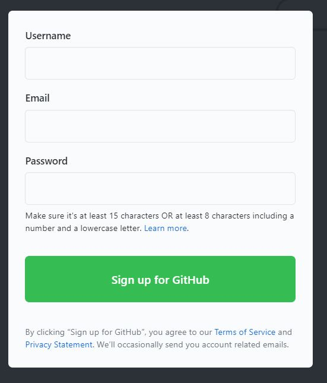
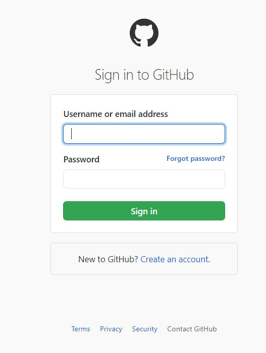
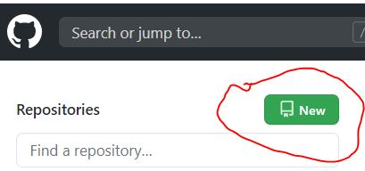
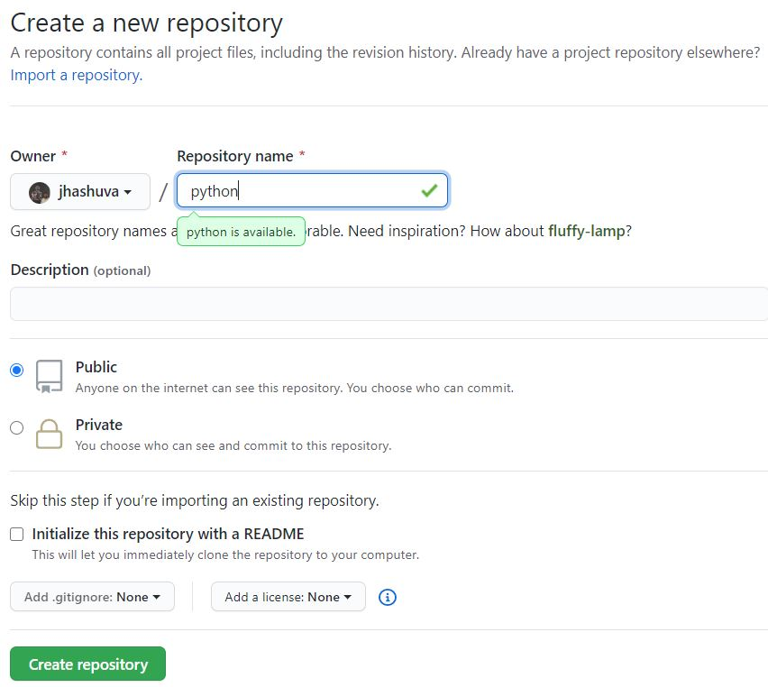

What is Github ?
- GitHub provides hosting for software development.
- It also provides version control using Git.
- It offers distributed version control.
- It offers source code management(SCM) functionality of Git.
-
It provides access control and several collaborations features such as bug tracking, feature requests, task management, and wikis for every project.
-
It offers basic services free of cost.
Create GitHub account
-
Goto the GitHub website (https://github.com/)
-
Sign up for GitHub

- Sign in to your github account.

- Create a new repository


Now you are done. We will see later how to save our program files in this repository.